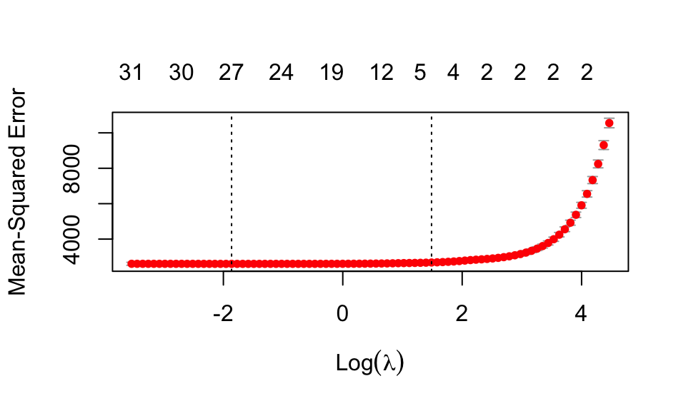

Back in Lab 10, or thereabouts, we walked through a LASSO model fit to student level data from the PISA exam. For our predictive task, we imagined that these students come from a single country, but in fact, we combined data from multiple nations. I sourced these data using the learningtower package.
18 The Story
You are newly hired analyst working in the State Ministry of Education. This morning, you open your email to find a request from your supervisor, your first project in the new job. How exciting!
Your boss writes that the Ministry has received funding to provide a one-on-one tutoring intervention for a modest number of struggling 8th grade math students. It’s important that we select the right students for the intervention because we can’t afford to give it to everyone. Unfortunately, we don’t have previous math scores for students in the state. The first standardized math test they take is at the end of 8th grade.
Your boss proposes that you build a predictive model, using the other data the ministry has about students, to estimate who will perform poorly in math at the end of the 8th grade.
The only other requirement is that the model can be explained to policymakers and other higherups in the ministry. No black-box models.
Her email includes an attachment with the data on last year’s 8th graders.
Our goal is to understand what is predictive of math scores. More specifically, we want to predict who the struggling students will be. There are a lot of things we could do. Remember whatever we do must be interpretable/explainable. Trees might work. Of course we’ll settle on LASSO here. Generally speaking, LASSO is more interpretable than Ridge? (LASSO shrinks many predictors to zero, so we only have to explain the non-zero coefficients, which hopefully will be a small number.)
19 Fitting and interpreting LASSO
Here is a block of code that (without any actual exploration, etc.–please see the lab for that) fits the LASSO model.
stu_data <-read_csv('data/student_data.csv')stu_data = stu_data[,-c(1:2)]stu_data <-na.omit(stu_data)x <-model.matrix(math ~ ., stu_data)[,-1]y <- stu_data$mathset.seed(42120)cross_validation_results_lasso <-cv.glmnet(x = x, y = y, alpha =1, # 1 for LASSO, 0 for ridgenfolds =10,type.measure ="mse")print(cross_validation_results_lasso)
Call: cv.glmnet(x = x, y = y, type.measure = "mse", nfolds = 10, alpha = 1)
Measure: Mean-Squared Error
Lambda Index Measure SE Nonzero
min 0.155 69 2601 85.10 27
1se 4.422 33 2678 87.96 5
In the above we loaded data, dropped anything with missing data (sad!) and fit LASSO, tuning with cross validation. We get an estimated Lambda of 4.422 using the 1SE rule.
We like plots, so we generate this one:
plot(cross_validation_results_lasso)

What does it tell us? Mainly, it says that small amounts of regularization are about the same as larger amounts–note the long flat part of the curve. This means that we don’t lose much if we regularize more (up to where it curves up). Regularizing more means fewer nonzero coefficients, and easier interpretation! If we regularize too much, however, our RMSE goes up quite fast.
But this plot is not particularly useful for our eventual consumers. They don’t want to know that you tuned your model; they want to know what your eventual model says! These plots, therefore, do not belong in a final report.
LASSO selected only a few of the many predictors available. In particular, the main predictors of math score are reading in science score, the student’s economic, social and cultural status (ESCS), whether they have a computer, and whether they are assigned male in the data. Given this information, the Lasso model is saying that knowing how many televisions, cars, books, or computers are in the family is not useful for predicting math score. Neither is the mothers or fathers education level.
As an aside, it’s generally hard to use categorical variables – continuous variables are easier to select because a single variable can describe a lot of variation. So this might be why these other variables are not being picked.
19.1 What variables to include?
We might not want to put all of our available variables into our model. For example, if we are trying to predict math score, we might not want to include other test scores from that same testing occasion, because were looking for contextual factors that lead to a particular outcome. Thus, we might rerun everything we’ve done without including reading and science, which would force the model to use the contextual variables about the students rather than other measures of their academic ability.
19.2 Coefficient size
The SIZE of the coefficients is going to be too small, in general, because LASSO shrinks coefficients towards zero to stabilize. We should not, for example, expect that the increase in math for each unit increase in reading is 0.3432561. One trick some folks do is refit the selected coefficients using OLS to get a new, final model:
We might worry that the Lasso model is picking these variables only due to random chance. We could bootstrap this process to see if the same variables tend to get picked each time. Here is a single bootstrap iteration to illustrate:
We generally got the same answers, suggesting stability in what variables are selected. But we should do this a lot, and see how often each variable shows up. To do this, we need a function! And, for our function, life is always easier if we get a data frame back:
one_boot <-function( ) { datstar =slice_sample( stu_data, n =nrow(stu_data), replace=TRUE ) xstar <-model.matrix(math ~ ., datstar)[,-1] ystar <- datstar$math modstar <-glmnet(x = xstar,y = ystar, lambda = best_lambda_lasso,alpha =1 ) cc <-coef(modstar) cc <- cc[ cc[,1] !=0, ] cc =tibble( coef =names(cc), est = cc)}
The things at the top were always selected–they are clearly important. The things near the bottom are less so. Our initial “computer” variable seems somewhat important, but not as reliably selected as things such as reading and science.
19.4 Last words on writing up results
In writing up your results, consider the following elements:
Introduction: Begin by introducing the purpose of your analysis and the dataset you used. For example:
“We fit a Lasso regression model to predict the response variable [name of response variable] based on [list of predictor variables]. The dataset used was [name of dataset] and consisted of [number of observations] observations.”
Model Selection: Explain the process you used to select the best model, including the choice of the regularization parameter. For example:
“We used cross-validation to select the value of lambda that minimized the mean squared error. The selected lambda was [value].”
Model Performance: Report the performance of the Lasso model, including the model’s R-squared value, the root mean squared error (RMSE), and any other relevant metrics. For example:
“The Lasso model achieved an R-squared value of [R-squared value], indicating that [percentage of variation in response variable] of the variation in the response variable can be explained by the predictor variables. The RMSE of the model was [RMSE value], indicating an average error of [RMSE value] units in predicting the response variable.”
You can calculate R2 by comparing the variance of the predictions to the variance of the original outcome: \[ R^2 = 1 - \frac{ Var( predictions ) }{ Var( Y ) } \]
Interpretation of Coefficients: Report the estimated coefficients. For example:
“Table XX shows the estimated coefficients for the predictor variables.”
You might include OLS values as well, on this table.
Conclusion: Summarize the key findings of your analysis and any insights gained from the Lasso model. For example:
“In conclusion, we found that [some variables] predicted our outcome, suggesting [something]. On the other hand, we expected [something else] to be selected, but it never was across the bootstrap samples, indicating that, given the other variables, there is no strong connection between [this thing] and the outcome.”
Remember to provide enough detail for the reader to understand your analysis, but keep your report concise and focused on the key points.